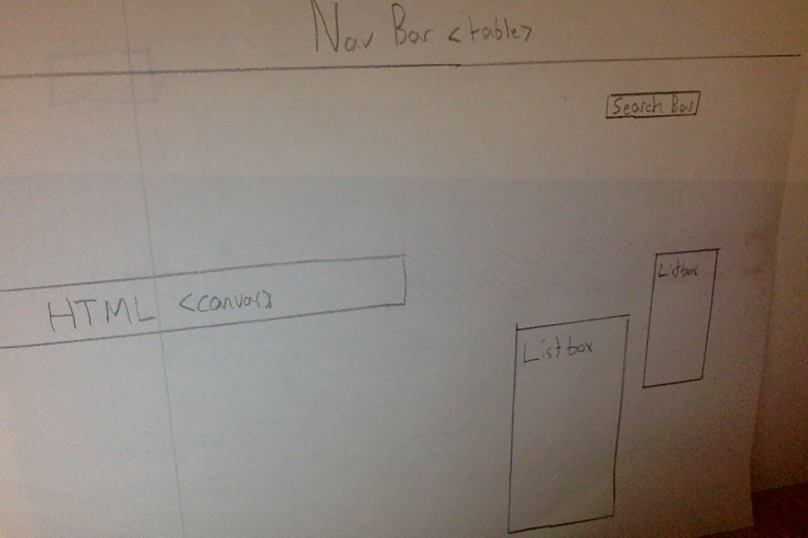
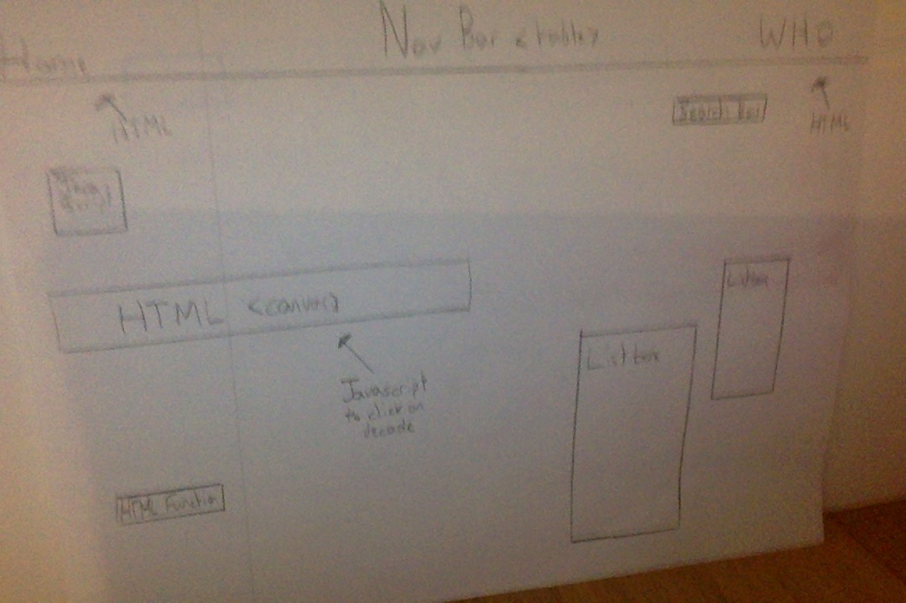
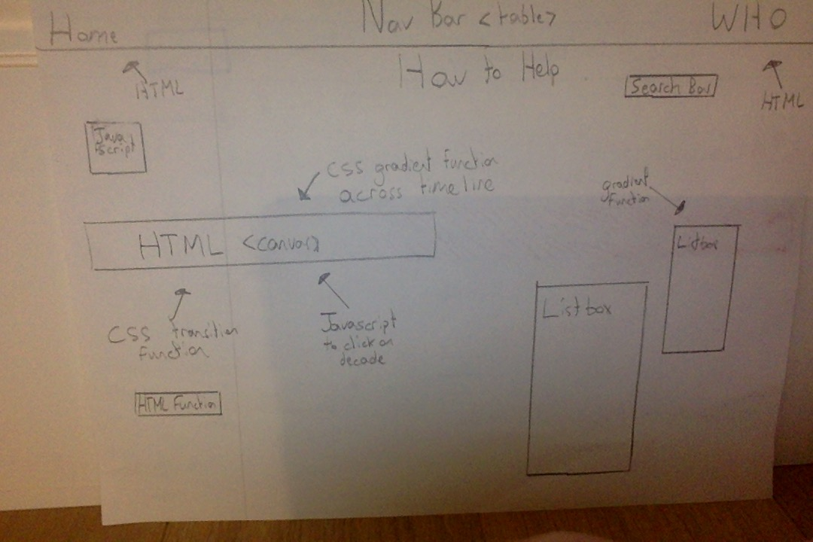

This is a link to my information
Urban Population Overtime
By: Mack McGregor
Design Specifications
These are design specifications for my webpage
User must be able to select a certain countries data
User must be able to see colour gradient change in order to see countries urban overpopulation
User must see CSS transitions to see countries change overtime
User must see countries similar to the country selected in a list box
Design #1
The image below is my first design at a HTML, CSS, Javascript webpage of WHO data on urban overpopulation
Pros of this design
shows 1950 to 2050 percentage difference
shows map of the world overtime which helps the user spot trends
has all the countries in listbox
Cons of this design
Difficult to make on HTML
A lot of scrolling to find countries further down on the list
timeline is unable to be paused by the user

Design #2
The image below is my second design at a HTML, CSS, Javascript webpage of WHO data on urban overpopulation
Pros of this design
Has a lot of different relevant data
Lets user see countries similar to the one searched
Coding required is easy to do
Colours make page visually appealing
Cons of this design
Stats crammed into one page
no outstanding functions
no picture or graph the user may want to see

Chosen Design
I will be using design two for multiple reasons. First, the two designs were similarily liked by my peers and family, but the second design is more capable for HTML coding. Also, many websites have similar designs to the first one and would like to see something different. And Finally, this design puts the stats more in the users hand and gives them the ability to see more stats at greater detail. Although both designs were strong, I choose the second one due to these reasons along with my personal opinion.
Step-by-Step
Step 1: Understand HTML code needed to make the webpage

Step 2: Add javascript and HTML functions to webpage to make it functional

Step 3: Make the webpage aesthetically pleasing by using CSS and canvas
